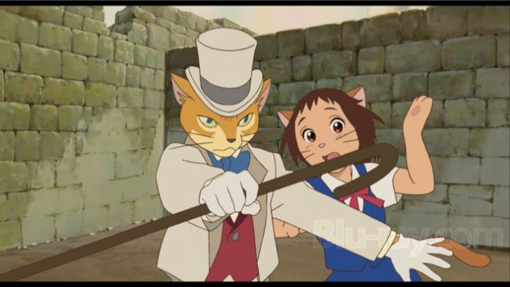

In 2001, Studio Ghibli released "Spirited Away," a film that received praise and attention across the world, even winning an Academy Award in America. After such an achievement, what could they possibly release next as a worthy follow-up? Most fans would outright forget that their next film would be "The Cat Returns," released only a year later in 2002. It was originally a simple comissioned short film requested by a Japanese theme park involving a theme of "cats." The story behind the production says that the poster icon and hero, the "Baron," was insisted by Hayao Miyazaki to be part of the short from the start, a returning character from a short cameo in "Whisper of the Heart." When the theme park eventually canceled their involvement, the story was turned into a complete feature film and an opportunity for a new director to participate: Hiroyuki Morita, who traditionally worked as an animator, and would not go on to direct much else in his career aside from this film.Based on this background, it makes sense that "The Cat Returns" is a smaller film, both in production value and thematic weight. But it's a animated movie entirely around a magical kingdom of cats! Who could hate that?! Much like "Porco Rosso" (another smaller project turned into a theatrical feature film), "The Cat Returns" is charmingly fun as a simple fantasy adventure that children of all ages can enjoy. That it happens to feature a character that appeared in a previous Ghibli work technically makes this a sequel, the only such sequel they've ever produced of their sacred catalog, which in itself makes it a fascinating part of the studio's history. The story loosely resembles tales like "Alice in Wonderland," "The Nutcracker," or more classical fairy tales involving princes and princesses. Haru is a young human girl who rescues a cat from getting killed in traffic, and to her surprise, the cat thanks her kindly. This cat happens to be the prince of the Cat Kingdom, and in gratitude offers her his hand in marriage and the opportuntiy to become the queen. Having no intention to accept the offer, the prince and his followers assume she agreed and start proceeding with plans against her will. With no where to turn in a world she previously knew nothing about, Haru receives advice to seek help from the Baron, a cat come to life from a figurine, dressed in a white suit and top hat with manners befitting a proper gentleman. So he and his friends try to assist Haru through the maze of misunderstandings, and a internal plot that threatens the kingdom.The visual style, particularly with the character designs, doesn't look quite right. Faces are simplified with odd proportions between the eyes and mouth. I suspect this is partially due to a new director, and perhaps due to the studio learning to use a more digital pipeline than what they were used to. Even the more fantastical settings, like the kingdom of the cats, simply feel as expected, with little inspiration beyond what a child might come up with given the premise. That said, the cats themselves are well-realized, and the animation overall is still impressively detailed, whether it be Haru's way of walking or running, or a scene of a parade of cats carrying the characters across rooftops.  Yes, there is a scene of a parade of cats carrying a human girl across rooftops. If you like cats at all, you will squeal with delight at least once in every five minutes of this relatively short film (at 75 minutes, it's one of the studio's shortest). If you don't like cats... you might think the movie is a waste of time, but even then will find something to appreciate in Haru and the dashing Baron. The English dub is worth watching, if only for the inspired casting of Cary Elwes as the Baron, best known for his leading roles in "The Princess Bride" and "Robin Hood: Men in Tights." Or perhaps you would watch to hear Tim Curry as the Cat King, or even Anne Hatheway (reaching fame in Disney's "The Princess Diaries" films around this time) as Haru. The acting isn't particularly among the best of English dubs, but is more than competant, and the casting choices are rarely this good for dubbing an anime. The musical score is arguably on par with Ghibli's other movies, with an appropriate sense of whimsy and majesty.All of the movies by Studio Ghibli are mandatory viewing. "The Cat Returns" is probably less necessary than others, but is still a fan favorite for those who have seen it. Exactly how much you enjoy it will depend almost entirely on whether you have any child sensibilities left in you, and on how much you love cats. And some people do declare "The Cat Returns" as their favorite; I guess they really, really love cats!
- "Ani" More reviews can be found at : https://2danicritic.github.io/ Previous review: review_The_Case_of_Hana_&_Alice Next review: review_The_Comic_Artist_&_His_Assistants